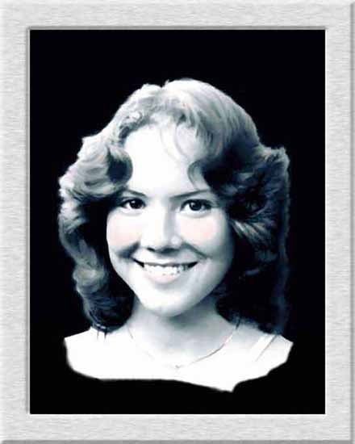

| Dawn. Pastel, watercolor. This is my older daughter painted from a photograph I took of her when she was in her teens. I like the look of painting in gray tones with subtle color added, as I did to her cheeks and lips. Hope this comes out on your monitor as very light. |